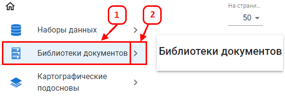
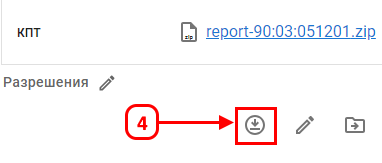
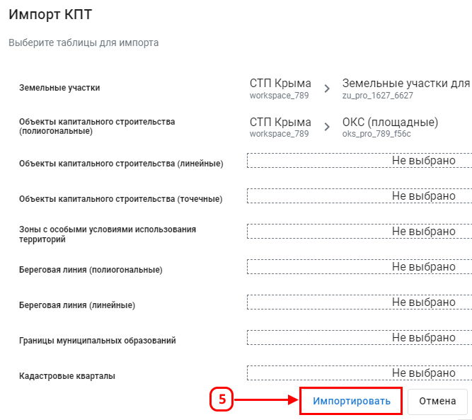
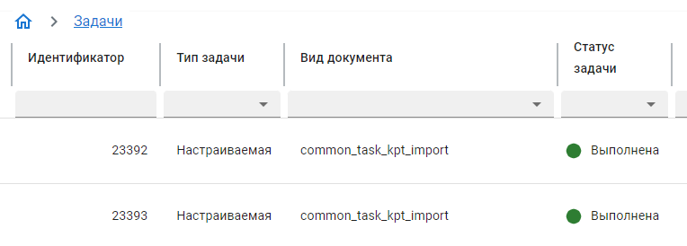

Функция «Импорт КПТ» предназначена для импорта ранее заказанных кадастровых данных из папки или документов, в выбранные векторные таблицы.
Для импорта КПТ необходимо перейти в раздел «Библиотеки документов» (2).

В фильтре по названию найти библиотеку «КПТ» (3).
В библиотеке выбрать папку с заказанными КПТ, в папке размещены документы с наименованием кадастрового квартала.
Для импорта необходимо нажать (4).

Импортировать в выбранные таблицы (5) данные КПТ.

Просмотр статуса выполнения импорта можно увидеть в разделе «Задачи».

Процесс импорта завершен когда в разделе «Задачи» в статусе задачи указано «Выполнена». Данные доступны для просмотра на карте или через наборы данных.